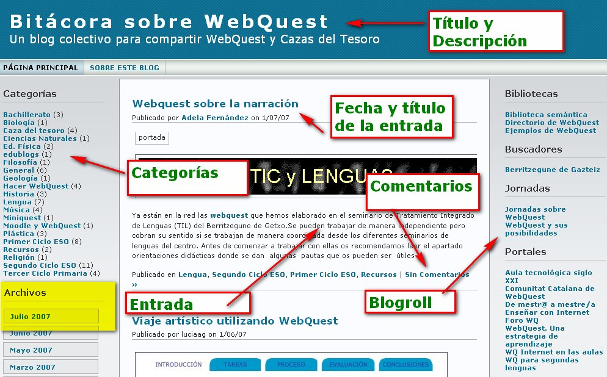
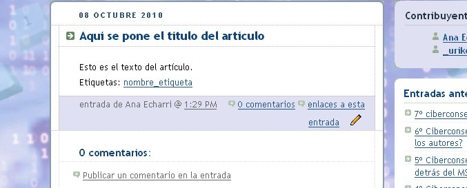

Importante
Las bitácoras tienen una
estructura y elementos comunes que definen su formato: artículos,
comentarios, enlaces... que a modo de diario se ordenan por
fecha de
publicación (primero el más reciente).
Cómo se organiza un blog - Página principal
|  |
|
Img 12. Elementos de un blog
Imagen obtenida en aula3c bajo licencia Creative Commons |
Página principal del blog (Home o Inicio)
Estos son los elementos principales de cualquier blog, están agrupados en 3 grandes zonas. No todos los blogs tienen la lista completa de elementos aquí citados:
¿Cómo se organiza un blog? - Página de un artículo

Artículo (post o entrada)
Cuando entramos en un artículo o entrada de un blog encontramos varios elementos (no tienen por que aparecer todos los siguientes):
El hecho de escribir un artículo en el blog se suele conocer como postear.